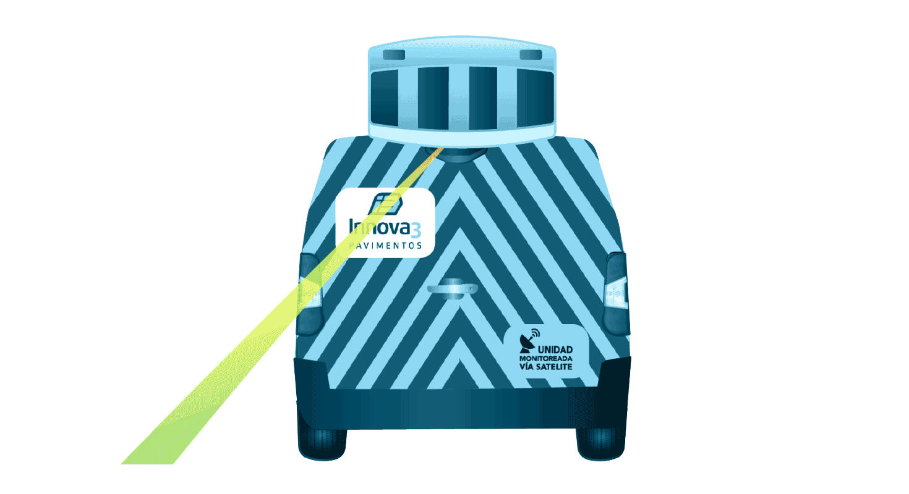
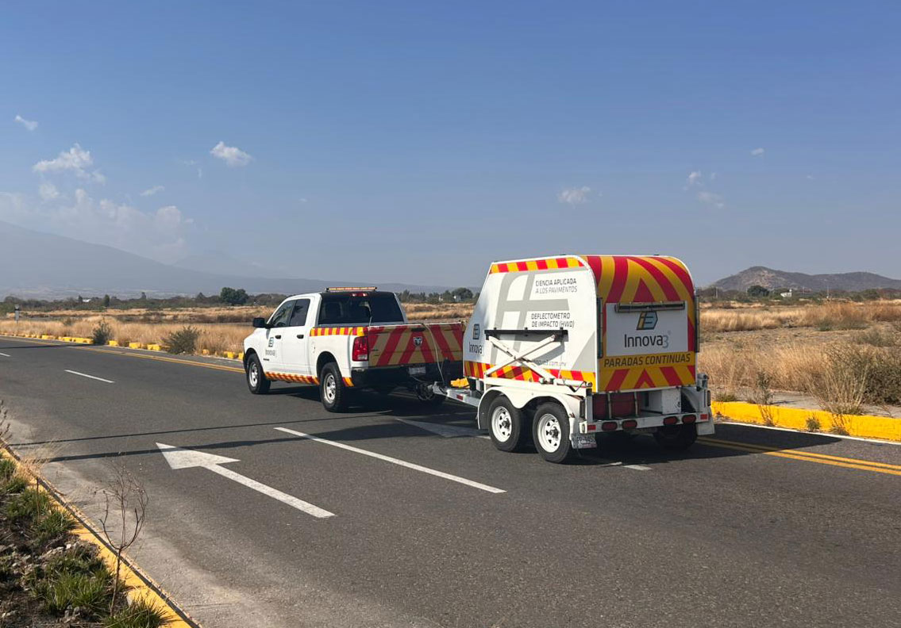
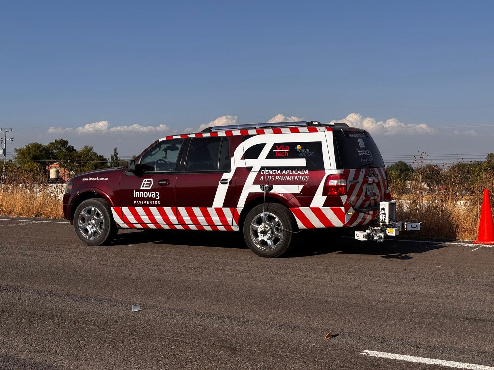
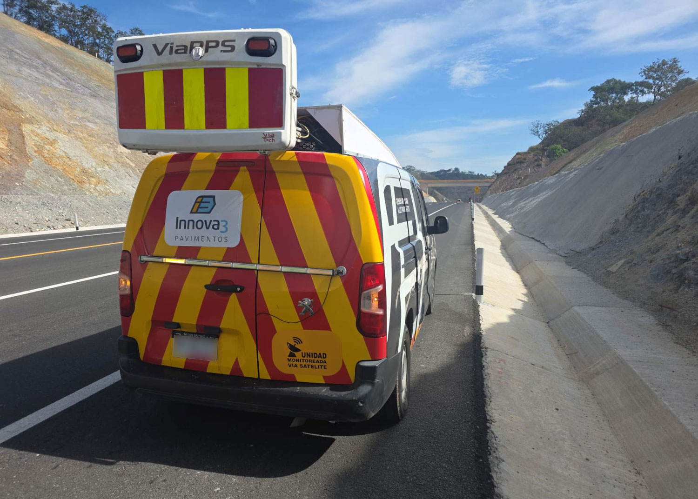
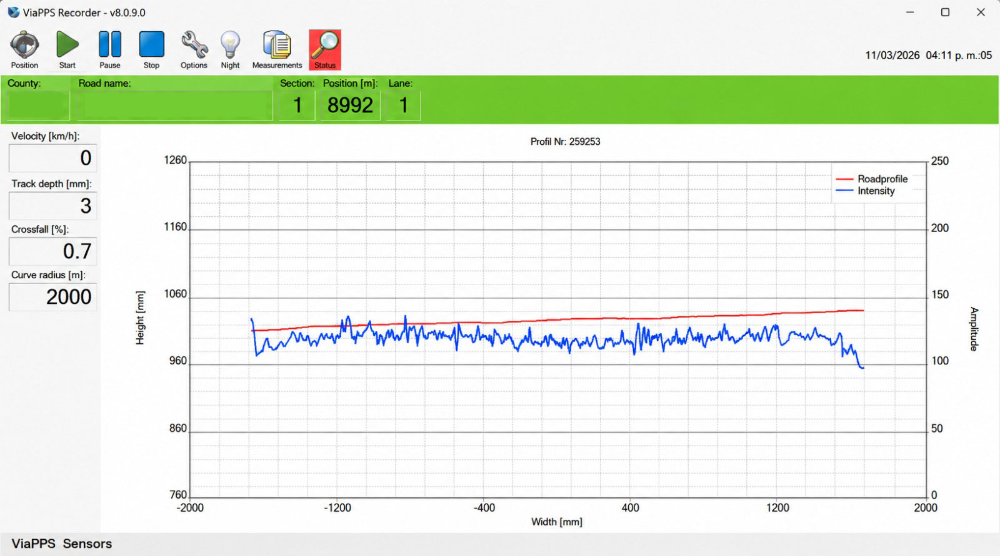
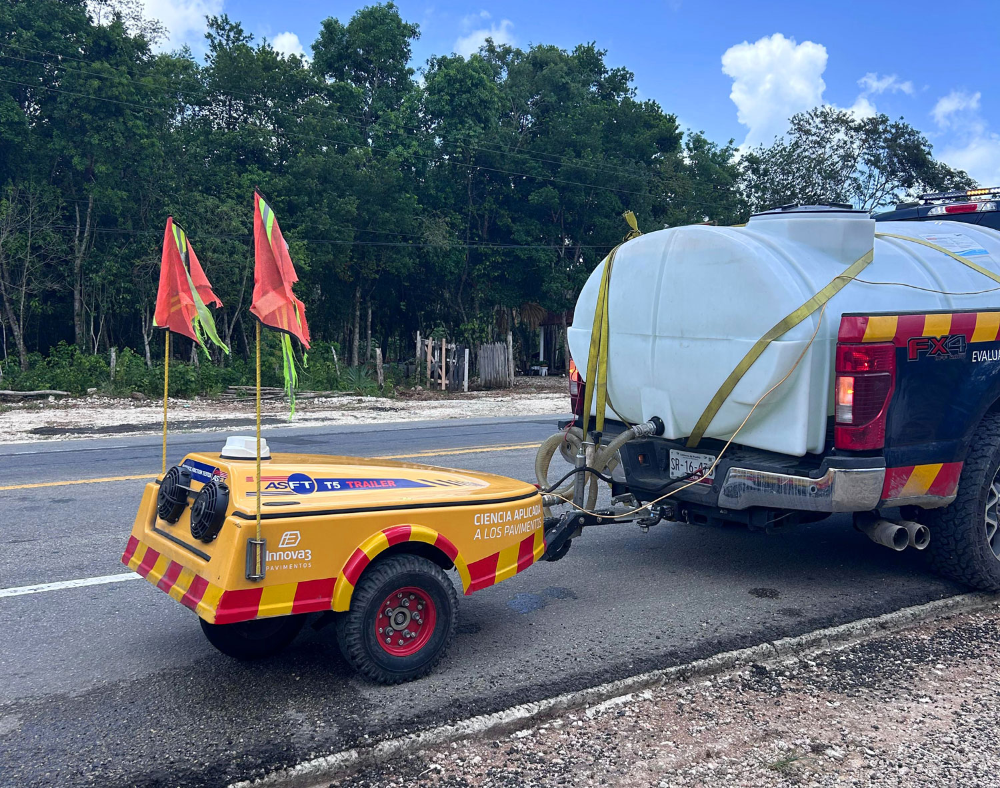
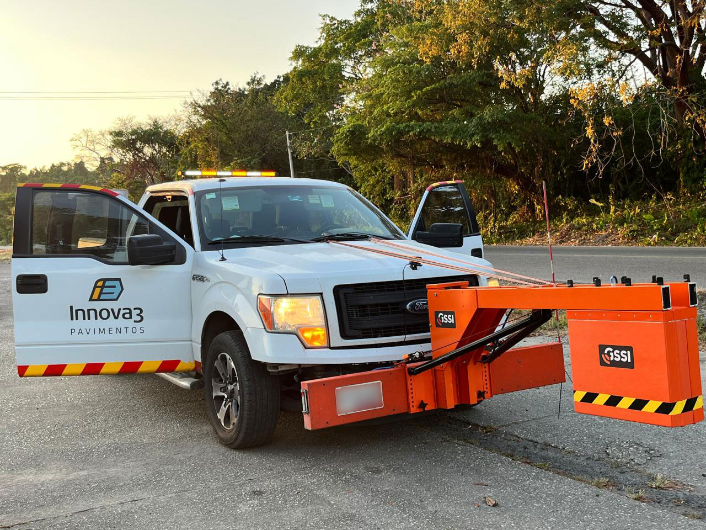
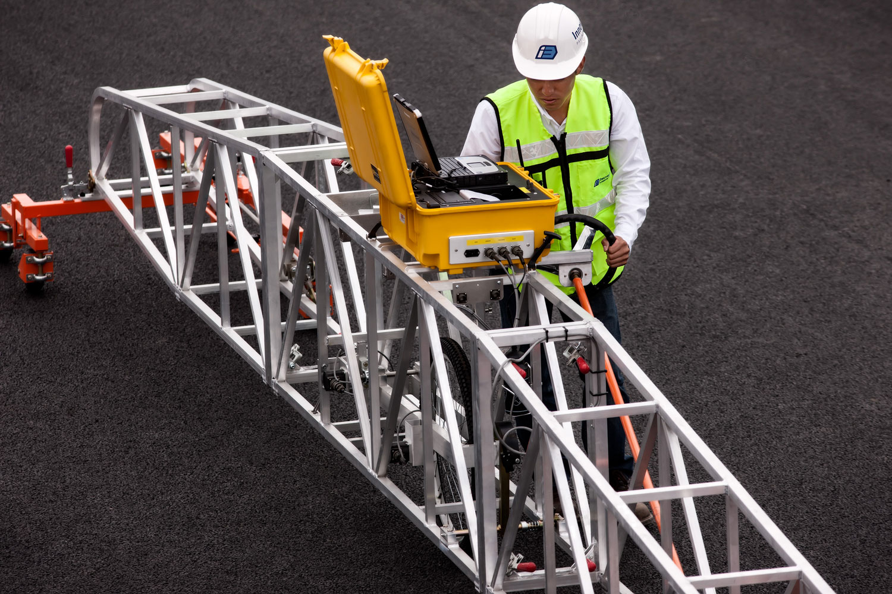

DATOS CONFIABLES
Evaluamos el estado funcional, superficial y estructural de los pavimentos para la toma de decisiones informadas para su conservación y rehabilitación.

TECNOLOGÍA DE VANGUARDIA
Utilizamos tecnología de vanguardia para diagnosticar el estado y desempeño de las superficies viales en términos de seguridad, confort y capacidad estructural.

DEFLEXIONES (HWD)
El Deflectómetro de Impacto permite analizar la respuesta del pavimento ante cargas dinámicas, proporcionando información clave sobre su rigidez, capacidad estructural y vida útil remanente.
Gracias a su configuración Heavy Weight, el HWD ofrece la capacidad necesaria para evaluar pavimentos de aeropuertos y otras infraestructuras de alta exigencia.

ÍNDICE DE REGULARIDAD INTERNACIONAL (IRI) Y MACROTEXTURA (MAC)
Nuestro sistema de perfilometría láser integra tecnología de última generación para capturar datos con máxima exactitud sin interrumpir la operación vial.



PROFUNDIDAD DE RODERA (PR) Y DETERIOROS (DET)
Mediante nuestro sistema láser transversal de 560 puntos es posible analizar el comportamiento del pavimento en tiempo real, proporcionando información clave sobre roderas y deformaciones estructurales para una toma de decisiones oportuna.
La información es procesada mediante inteligencia artificial en un software especializado, permitiendo detectar, identificar y clasificar deterioros superficiales, así como delimitar las áreas afectadas y asignar niveles de severidad. Esto genera bases de datos útiles para la evaluación del estado del pavimento y la planeación de su conservación.


COEFICIENTE DE FRICCIÓN (CF)
Skid Doctor es un equipo de medición continua de fricción de tipo remolque, clasificado como un dispositivo de deslizamiento fijo con rueda parcialmente bloqueada que cuantifica el coeficiente de fricción superficial (μ) a cualquier velocidad, lo cual resulta muy conveniente para zonas urbanas o que requieren paradas continuas.
Su autonomía de km es una gran ventaja operativa para reducir costos y tiempos.

RADAR DE PENETRACIÓN TERRESTRE (GPR)
Nuestro sistema Radar de Penetración Terrestre (GPR) permite obtener información detallada de la estructura interna del pavimento y del subsuelo, facilitando la detección de fallas ocultas y la toma de decisiones basada en datos reales.



ÍNDICE DE PERFIL CON PERFILÓGRAFO TIPO CALIFORNIA (IP)
El perfilógrafo tipo California permite evaluar la regularidad superficial del pavimento, siendo una herramienta clave para verificación de calidad, cumplimiento normativo y aceptación de obra.